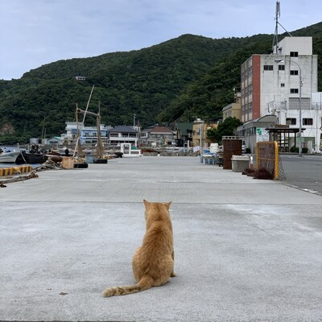
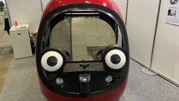
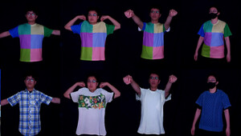

Ph.D. Student
Graduate School of Information Science and Technology
The University of Tokyo
E-mail: yf-qian at g.ecc.u-tokyo.ac.jp
or: yqian.research at gmail.com
Google Scholar / GitHub / Bluesky
Site last update: November 2026
I am a Ph.D. student at The University of Tokyo, working at the Igarashi Lab (User Interface Research Group) and advised by Prof. Takeo Igarashi. I'm interested in computer graphics, particularly inverse rendering for creating interactive and fabricable geometric design applications.
I received my M.S. in Computer Science (Creative Informatics) from The University of Tokyo in 2023, advised by Prof. Takeo Igarashi. Before that, I received my B.S. in Information and Communication Sciences from Sophia University in 2021, working with Prof. Masakatsu Ogawa.


Project pages are inspired by the websites of Quentin Becker and Zoë Marschner.